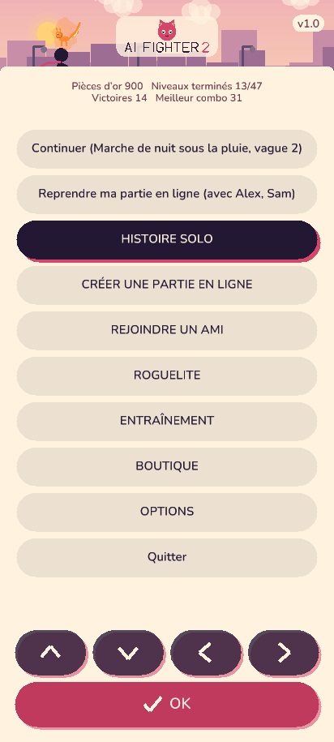
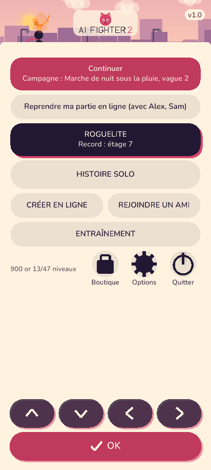
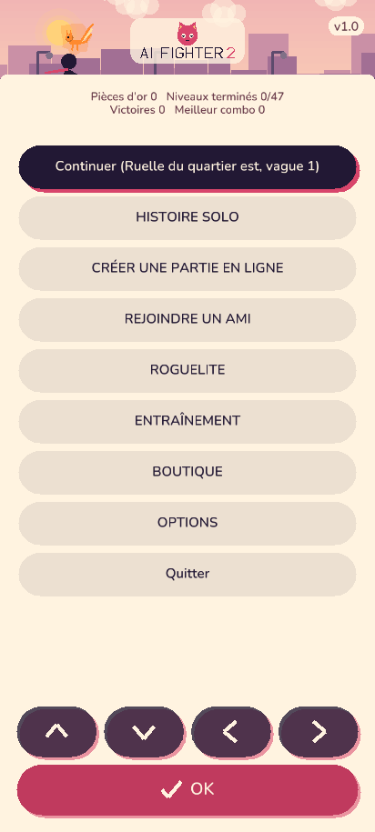
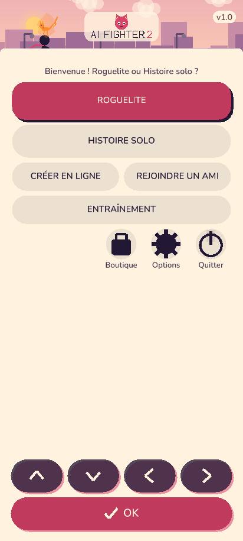
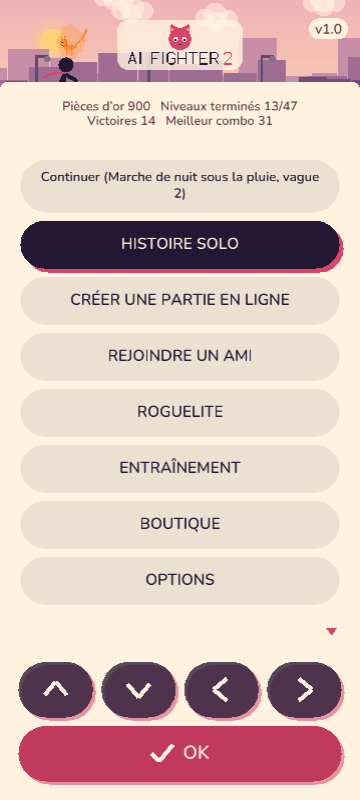
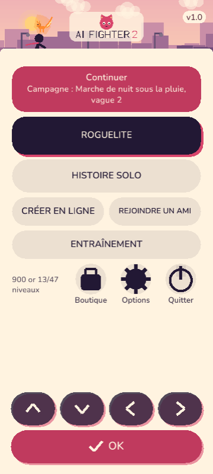
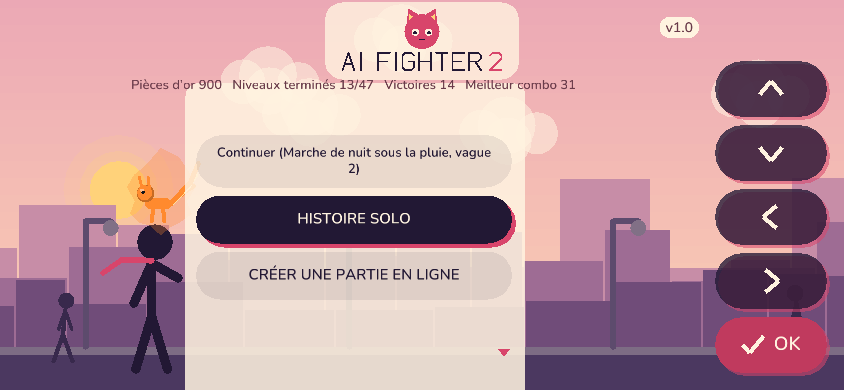
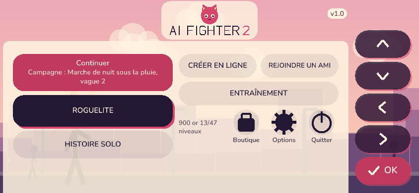
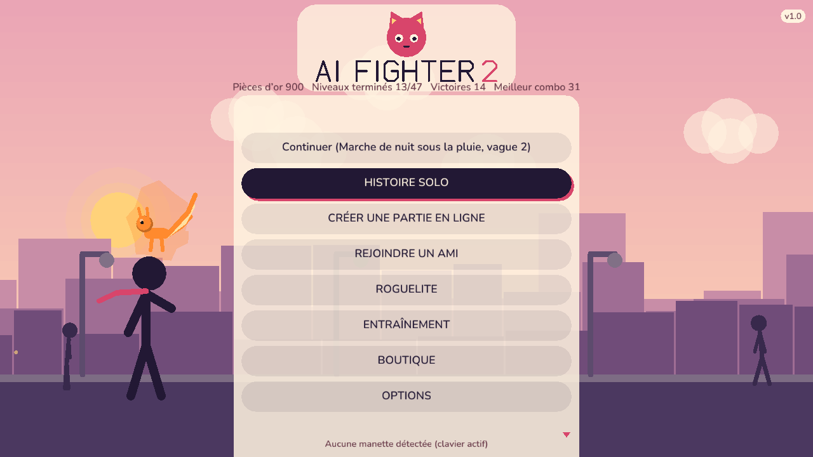
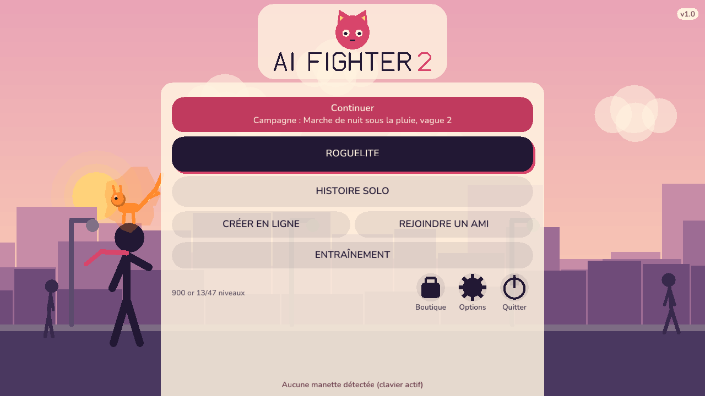

Avant : 9 gros boutons empiles + 4 statistiques. Apres : Continuer (mode + ou l'on en est), ROGUELITE, HISTOIRE SOLO, creer / rejoindre sur une seule rangee, ENTRAINEMENT, et en bas (a portee du pouce) une ligne de stats et des icones Boutique / Options (Quitter seulement sur PC natif). Captures du vrai moteur.










| Parcours | avant | apres |
|---|---|---|
| Continuer | 1 | 1 |
| Roguelite | 5 | 2 |
| Histoire solo | 2 | 3 |
| Creer en ligne | 3 | 4 |
| Rejoindre un ami | 4 | 5 |
| Entrainement | 6 | 3 |
| Boutique | 7 | 2 |
| Options | 8 | 3 |
| Total | 36 | 23 |
Au toucher : 1 pression pour chaque entree avant et apres (rien a defiler). Histoire / creer / rejoindre coutent 1 de plus au clavier parce que ROGUELITE passe devant. Une fois dans le sous-menu, les parcours (roguelite, histoire, entrainement, options) gardent leur nombre d'activations.